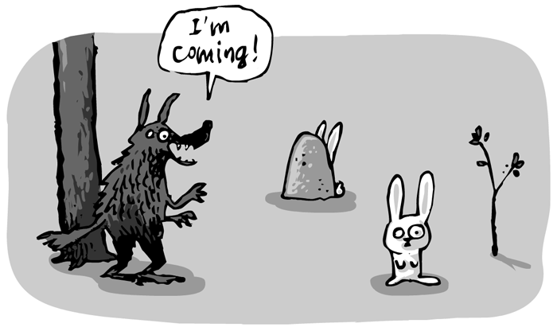
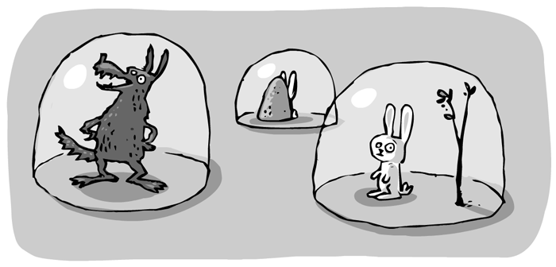

Suppose, you wanted to create a "hide and seek" game.
You have written a "wolf" class. And instantiated two bunnies, who have to hide.
Eventually, the wolf shouts "I'm coming". Its the signal for your bunnies that they should be safely hidden or find a hiding place asap.
Yet, you may find, the objects in your game are oblivious of one another. It's what they call "separation of concern": The wolf doesn't carry a list of all bunnies that joined the game and the bunnies don't know about the wolf either. He can shout all he wants, the bunnies have no way of heraring him.
So how can the bunnies be informed that the wolf is coming? Actually they are somewhat concerned the wolf could find them.
This is where the eventmanager comes in. You can instantiate one in your main scene, and pass it to all objects who want to either stay informed, or want to notify others about whatever is happening in your game.
@eventManager = new EventManager
It's not unlike a phone system. The bunny subscribes to, or registers the event "I'm coming" with its "find_hiding_place" method – and whenever the wolf triggers "I'm coming" all the bunnies who are listening will know that it's time to hide.
class Bunny
constructor: (@eventManager) ->
@eventManager.register "im_coming", @hide
hide: ->
# find a place to hide!